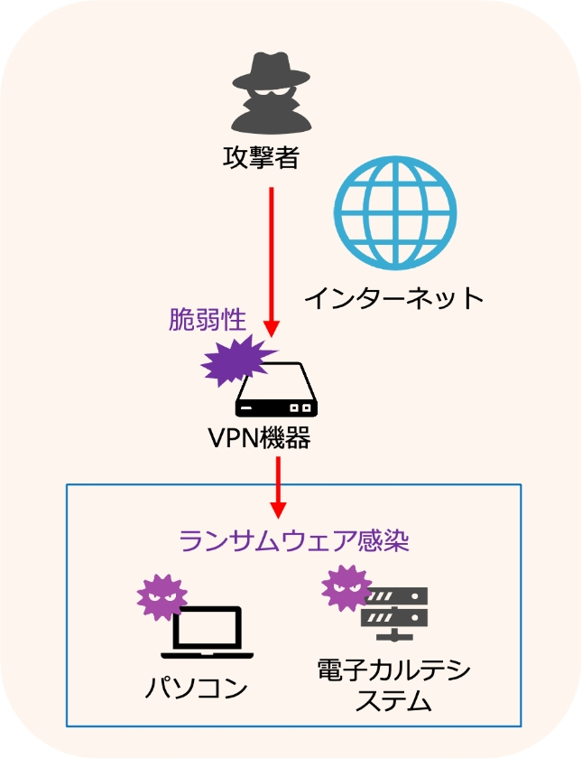

2-3-2. 事例：某病院のランサムウェア被害
病院内で重大なインシデントが発生しました。複数のプリンタが同時に犯行声明を印刷し、LockBit2.0ランサムウェアに感染したことが判明しました。この攻撃により、電子カルテなどの端末と関連するサーバのデータが暗号化され、患者の診察記録が閲覧できなくなり、病院の機能は停止しました。侵入経路は、導入されているVPN装置の脆弱性を悪用したものと考えられ、これは過去に話題になった脆弱性と同じものでした。病院は事前に策定されたBCP（事業継続計画）を発動し、迅速な対応を行い、警察への相談や関係機関の連携を行いました。
対策方針として全体の状況把握や情報漏えいの特定よりも、データの復元やシステムの再構築に取組ました。フォレンジックを担当した事業者が一部のデータを復元することができ、復元端末の初期化やセキュリティの見直しを行い、数か月後に通常の診療を再開することができました。

図13. 攻撃の概要図
問題点
- VPN装置は導入当初からソフトウェアの更新が行われていなかった。
- 厚生労働省からの注意喚起はあったが、病院側がリスク評価できず被害を想定できなかった。
- 庶務係がIT担当者を一人で兼任しており、セキュリティの知識・技術が不十分であった。
- 「VPN装置を使用すれば外部からのサイバー攻撃を受けない」という誤解があった。
- ベンダーがシステムの動作優先で、セキュリティ対策を考慮していなかった。
教訓
- 取引をしているベンダーと情報交換、コミュニケーションをとる。
- 経営者・担当者のセキュリティレベル向上を図る。
- インシデントが発生したときの被害を想定する。
会社の規模、業種を問わず、ランサムウェアの被害に遭う可能性はあります。大事なことは、「自社が狙われている」という危機感を持つことです。ランサムウェアに限らず、他の事例も含めて、危機感を持ちセキュリティ対策を総合的に取組むことが重要です。
詳細理解のため参考となる文献（参考文献）